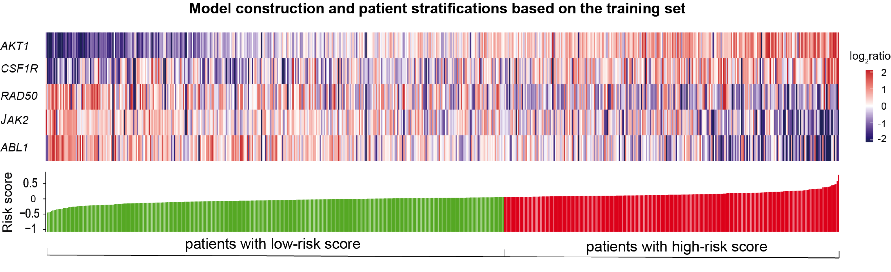
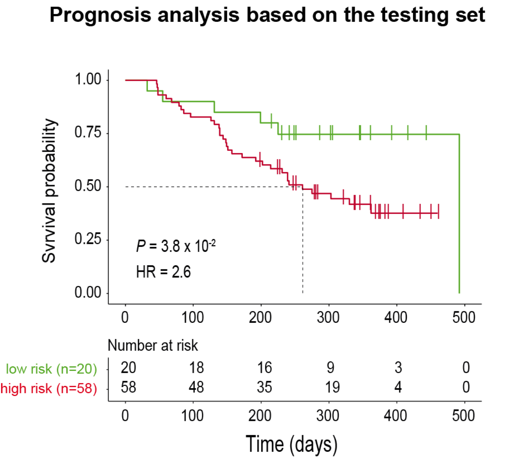

Section 5 Prognostic model

We attempted to construct a prognostic model that is clinically actionable using the CNV information of genes involved in DNA repair and several RTK related signaling pathways:
patients split into the training and testing sets;
the elastic net algorithm applied to the training set to construct a prognostic model consisting of RAD50 (involved in the HRR pathway), ABL1 (DNA repair), and 3 RTK related genes (JAK2, AKT1 and CSF1R);
the constructed model used to calculate risk score for each patient;
patients stratified into two groups with high and low risk score maximizing the DFS-based rank statistics.

The constructed model performed well for patients in the testing set that were not considered during the model construction: patients with high-risk score had significantly worse prognosis than those with low-risk score.